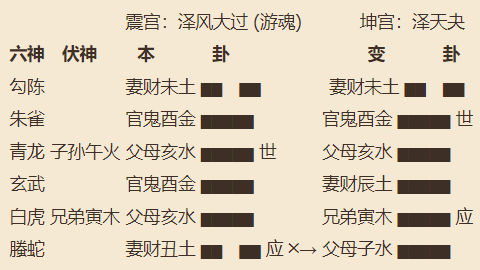
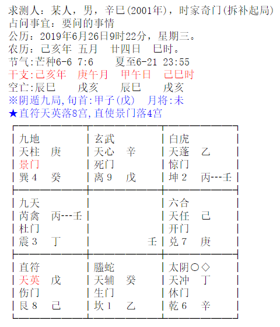

预测考试与专业选择
每年的六月份都是莘莘学子的考试季，无论高考或者中考都是人生历练当中重要的转折点，多少汗水、多少嘱托、多少期盼，正所谓“万般皆下品，唯有读书高”，如何通过易经的方法提高孩子的学习成绩，考上好大学，有个好的未来，一直是我从业以来研究的重要课题之一。
一个人适不适合读书，能不能考上重点大学，除了后天的努力以外，天赋也很重要，说直白一点就是生辰八字是不是读书的料，如果命格不适合读书，又没有读书运，父母应该去发掘孩子其他方面的兴趣爱好和特长，读书虽然是最好的出路，但也不是唯一出路，适合读书的八字不外乎印星，官星得力，食伤有效率，诸如伤官配印、木火通明、食伤泻秀一类，因为平时我讲八字案例比较多，接下来主要谈谈六爻和奇门在考试、考学领域的应用。
例一，六爻
先看一个例子，一位母亲求测儿子能否考上重点中学，摇得《大过》之《夬》卦（壬寅月 己丑日）

求测考试一般以父母和官鬼爻为用神，父母亥水休囚，财爻独发，一看就是考重点中学无望，官鬼为名次入动爻库，名落孙山之象，那知道了这个结果又有什么意义呢？这才是求测的目的。
我们必须找出哪些原因导致了学习成绩不好，子孙爻伏藏在父母爻下面，《大过》卦乃游魂卦，一看便知孩子贪玩，学习不用功，我告诉她你得把孩子看紧一点，求测人很无奈的说儿子就是喜欢打游戏怎么劝都不听。我说你得知道孩子功课欠缺在哪儿？某些功课跟不上让他丧失了学习的兴趣，又怎么不玩游戏呢？子孙爻临父母说明父母亥水是一门主课，兑为语言，很显然外语成绩不好，这是让孩子丧失学习信心的重要原因之一，毕竟飞神克伏神，另外三爻临玄武可以代表数学，入丑墓说明数学成绩也不理想，所以我的建议必须请家教把英语和数学两门拖后腿的功课补习起来，否则不但考不上重点中学，恐怕连普通高中都上不了，上普通中学有希望吗？那是当然因为衰下伏神易于引拨，必须努力争取，这就是决策。
从这个例子可以看出，并不是临近考试预测最好，而是越早预测更有意义，便于我们提前发现问题和不足，进行学习上的调整和规划，为将来考取好的成绩打下基础。如果实在到了考试的前几天了，预测只能尽可能的从易经的角度去优化考生了，比如穿什么颜色的衣服，几点钟从家里出发，身上佩带什么东西利于状态发挥等等。
考前预测是为了考试做准备，那考试后就不重要了吗？其实考试后你面临着选择问题，报考哪个学校、哪个专业、什么方位的学校最利于自己的发展等等。
例二，奇门
接下来看一个奇门的案例你就明白了，也是一位母亲求测儿子报考哪个专业哪个学校，心乱如麻，不知如何抉择。西历2019-06-26
己亥年 庚午月 甲午日 己巳时
值符：天英 值使：景门 年命：辛巳

儿子学习成绩不太好，考试结果出来了，分数不高，目前面临着填报志愿的纠结期，不知道选择哪个学校好，母亲初步筛选了六所可以填报的学校让我用奇门帮忙决策：
- 1、武汉职业技术学院；
- 2、武昌理工学院；
- 3、湖北商贸学院；
- 4、武汉城建学院；
- 5、武汉船舶学院；
- 6、湖北国土资源职业学院）。
首先要把六所学校找出来与八卦宫位一一对应，杜门为技术技能、天禽星为饮食、日常生活，所以选震宫为武昌职业技术学院的代号；理工科的特点是以大脑逻辑运算能力为主，离为大脑，玄武为虚幻灵活、天心星代表心算，选离宫为武昌理工学院的代号；商贸的性质有百货、门市、种类繁多的特点，六合为多，开门为门市，选兑宫为武汉商贸学院的代号；城市建设学院主要涉及房屋、建筑、景观绿化等，生门为房子，乙木为花草，天辅为装饰，所以取坎宫为代号；休门为水上运动，天冲为车辆交通工具，取乾宫为船舶学院的代号；艮为土地，值符为国家，戊己为地皮，取艮宫为国土资源学校的代号。
接下来就要分析八卦宫位的吉凶状态，以及和福主年命关系了，年命落离宫，坎宫克离宫，首先排除武汉城建学院，乾宫空亡了船舶学院也排除，离宫临死门，天心星受制，理工学院也排除，国土资源学校虽然与年命互生，但是毕竟戊加己六仪击刑也不是很理想，剩下的就只有商贸学院和职业技术学院了，震宫生年命宫，丙加丁星奇朱雀大吉之格，而兑宫开门天任星，吉星吉门都旺，所以两个学校都可以上，但是要讲最理想还得商贸学院，毕竟临着太岁和时干，天时地利的能量都旺。
从上面的例子可以看出奇门在预测决策方面的功能是很强大的，这里只涉及到了同一座城市的学校，有时还涉及到不同地区的不同学校，甚至不同学校不同专业，不同方位，相隔距离、国内还是国外都可以进行细化推理，综合评估。
有时候八字只能看个大概，能否上985、211、一本、还是普通大学，是上西边的大学还是东边的大学，计算机、金融、外语、电子商务等等，这些专业该如何选择，这是八字做不到的，若借助六爻和奇门来进行预测指导，会清晰多了，让你在人生路口不再迷茫！（完）